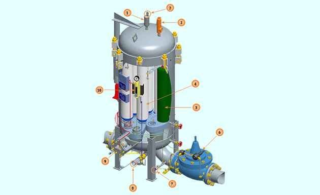
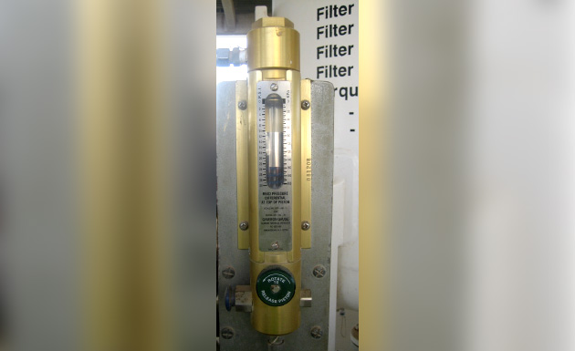
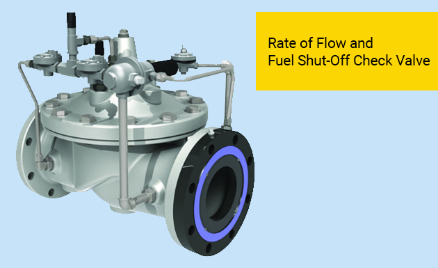
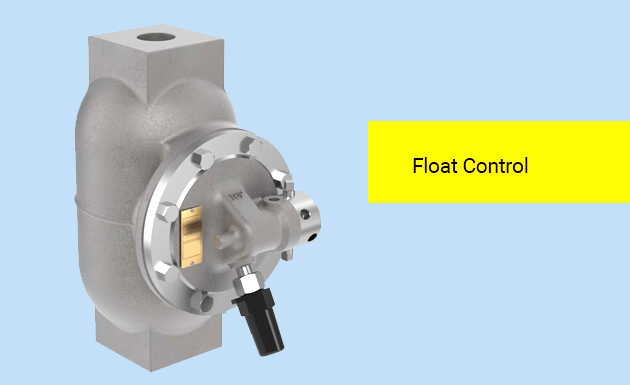
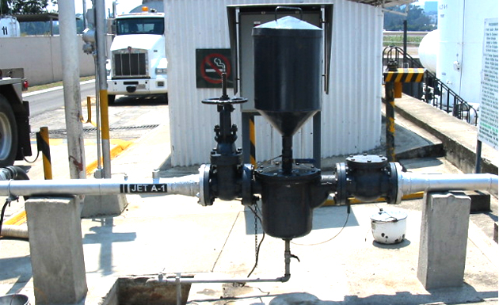
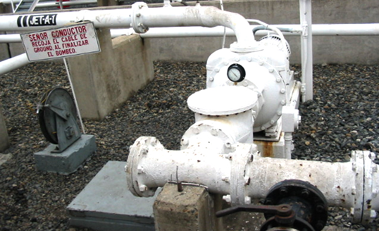
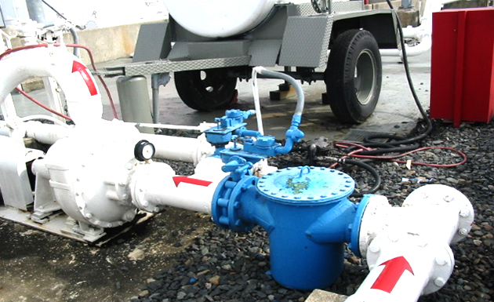

8.3 Micronic
Filter Vessel Accessories
- Micronic filters shall be equipped with:
- Air eliminator
- Pressure relief
- Piston differential pressure gauge
- A sump or vessel sample/drain
- Provision for upstream and downstream membrane testing
- All FWS shall be equipped with:
- Air eliminator
- Pressure relief
- Piston differential pressure gauge
- Water slug shutdown.
- Upstream, sump and downstream sampling points.
- Upstream and downstream provision for membrane testing.
- In systems where it is possible to exceed the design flow rate of the filter system, a flow limiting device is required.
Micronic
 (1).png)
Filter Vessel Accessories
8.3.2 FWS
8.3.3The function of Filter/Separator Accessories
- Automatic Air Eliminator Provides air vent to permit the escape of trapped air during the filling of the vessel. When the unit is completely filled with fuel, the air eliminator automatically closes.
- Prevents air from siphoning into the vessel through the air eliminator.
- Pressure Relief Valve This valve can be set to open at the desired pressure to exhaust excess pressure built up in the system, due to thermal expansion in a non-flow condition.
- Coalescer Element Designed to remove solid contaminants, break the emulsion of water in the product into droplets, and enlarge these droplets so that they will drop out of the product. The flow is from the inside to the outside of the coalescer.
- Separator Element Repels coalesced water droplets and prevents them from going downstream. The flow is from the outside to the inside.
- In the event of excessive water build-up, the slug valve, on signal from the float control, will shut down all flow through the system until excess water can be drained off. The slug valve can be provided with a rate-of-flow control which will prevent excessive flow rates through the filter/separator. 
- Sampling Probe The purpose of the probe is to insure that fuel samples are representative of the fuel in the pipe. The probe penetrates through the pipe coupling that is welded to the pipe. There is no possibility of rust and dirt that usually collects in stagnant pockets reaching the filter membrane test capsule.
- Manual Drain Opened daily to remove any accumulated water and to sample the fuel in the sump. This also helps to evaluate the condition of the coalescer. It is also opened to completely drain the vessel when changing elements.
- Float Control Rides the interface between fuel and water, and by its up and down movement, opens and closes ports to generate hydraulic signals to automatic valves. Parker AFD recommends the “ballast” type float control for easier checking of the integrity of the float ball.
- Pressure Gauge The direct reading differential pressure gauge is used to measure the pressure difference between the inlet and outlet of a filter/separator, thus providing an indication of the element condition.
8.3.4 Air Eliminator
- There is no certain way for the operator to know if all the elements inside the filter vessel are submerged in the fuel
- Air Eliminator releases trace air from the filter vessel. Without Air Eliminator, air will be trapped in most filters or filter separators
- Without an automatic means for releasing air, Air can accumulate to such an extent that the upper portions of elements are continually exposed and never do any filtering and potentially causing a fire in the vessel
- Air eliminators are basically used to remove AIR BUBBLES contained in the fuel flow
- Air must be EXPELLED from filter vessels for the following reasons:
- A vessel which contains sufficient air to expose some or all of the elements in the vessel is causing the fuel to be exposed to less element surface area than required; the effect is LESS FILTRATION of the fuel
- Elements, or parts of elements, which have been in fuel and then left to dry out (perhaps repeatedly) may DETERIORATE to the point at which performance suffers and MEDIA MIGRATION may add to downstream particles in the fuel
- Exposed sections of elements will cause fuel to pass through as a MIST while air is being expelled from the vessel;
- The MIST contains HIGH ELECTROSTATIC charges (especially in fuel containing static dissipater additives) which are likely to cause a FILTER FIRE or explosion if the fuel/air mixture is in the flammable range.
Air Eliminator
8.3.5 Pressure Relief Valve (PRV) or Thermal Relief Valve (TRV)
The terms Pressure Relief Valve (PRV) and Thermal Relief Valve (TRV) are used interchangeably. The following clarification can help understand the subtle difference
 (1).png)
- A Pressure Relief Valve (PRV) is designed to relieve DYNAMIC FLOW, that is, to prevent OVERPRESSURE by a positive displacement pump, and
- A Thermal Relief Valve (TRV) is designed to relieve pressure by an increase in fuel TEMPERATURE, that is, when there is NO FLOW in the main pipe or vessel
- Filter vessels are manufactured and designed at a SET PRESSURE and undergo strict approval processes.
- TRV is a mandatory accessory according to specification EI 1596
- Any EXCESS pressure build-up needs to be REMOVED from the system quickly and safely
- PRVs ENSURES that the design working pressure of the vessel is not EXCEEDED in cases of thermal expansion.
- TRVs are used to PROTECT the fuel circuit components against pressure build-up more than design pressure and pressure surges due to a rise in temperature
- Filter vessels are usually INSTALLED in OUTDOOR ambient conditions, and there is thermal expansion during the warmer months
- Main cause of pressure increase is the THERMAL EXPANSION due to hot outdoor ambient conditions
- TRVs are designed to RELEASE any EXCESS PRESSURE in the system and close when system pressure is below the set pressure
- TRVs are SET AT 1.1 TIMES the vessel design-rated working pressure
- Without a TRV, the thermal build-up can BREAK the vessel housing and cause LEAKS. Or,
- DAMAGE other adjacent components such as meters or hoses. Thermal buildup can create pressures OVER 1200 PSI in a 75 psi system
- Please note that these relief valves are only designed to handle NORMAL THERMAL STRESSES
- TRVs CANNOT handle other pressure increases incidents like SURGES and FIRES
- Thermal Relief Valve lines for Aviation fuel systems shall not be INTERCONNECTED with TRV lines for ANY OTHER FUEL PRODUCT
- Where POSITIVE SEGREGATION is mandated, TRVs on tank inlet lines shall not bypass inlet valve arrangements into storage tanks
- Example
- Inlet line TRVs should be connected to a tank side fast flush tank or product recovery tank
- TRVs on the tank outlet lines may bypass the outlet valve arrangements back into the tank
- TRVs shall be fitted with outlet pipework routed to suitable spill containment
- TRVs shall be HYDROSTATICALLY tested for proper opening pressure setting
- The test shall be a part of the ANNUAL FILTER VESSEL INSPECTION
8.3.6 Differential Pressure Gauge
- ALL filter vessels should have a differential pressure gauge or indicator
- Differential Pressure reading indicates the CONDITION of the elements
- Differential Pressure reading helps to avoid the possibility of BURSTING dirty elements
- A low-pressure pump cannot burst a properly designed and built element
- The preferred indicator is a direct reading, piston-type differential pressure gauge with an inlet filter

Gammon Gauge Check Valve Configurations
- Gauges shall be tested Six Monthly for full and free piston movement and correct zero (0) position of the piston.
- The check results shall be recorded.
- The small filter media pad installed in DP gauges inlet port should be inspected and replaced routinely. (2 years is suggested)
8.3.7 Water Defense Mechanism – Slug Valve and Float Control
- Filter Water Separator sump collects the water removed from the fuel by coalescers
- If this water is not drained regularly sump and when the sump gets full of water, any more removal of water will go downstream
- A Filter Separator WITHOUT a proper water control device able TO STOP THE SYSTEM FLOW if water collects in the sump is JUST A FILTER.
- This is because Coalscers may remove water, but once the sump of the filter separator is full of water, any additional water that enters the vessel goes downstream.
- Water defense mechanisms (water slug shutdowns) are used in FWS to shut down the system before coalesced water can accumulate sufficiently to rise above the lowest point of separator elements
- If water does accumulate to this level, any further accumulation will pass downstream of the filter vessel
- A WATER CONTROL DEVICE should POSITIVELY STOP the fuel flow.
- The water defense mechanism in filter separators shall be inspected for FREE MOTION.
- If the system uses a float, the float shall be checked for buoyancy; it should FLOAT IN WATER and SINK IN CLEAN FUEL of the same grade as used in the filter separator
- Water control may STOP the flow by TURNING OFF the pump or by causing an outlet CONTROL VALVE (Slug Valve) to CLOSE.  
- Correct functioning of the water defense mechanism shall be checked Monthly to the extent possible without draining and dismantling the vessel. Most float types can be checked only to the extent of the shut down mechanism because removal of the float is required to enable floatation to be checked. A floatation check is required at each annual inspection to ensure the float has the correct buoyancy to do its job.
- Electrical water detection systems shall be checked for correct operation in accordance with the manufacturers' instructions and the outside (filter sump side) of electrical probes should be cleaned.
- Electrical types can be checked by injecting water to the inside of the probe; this tests the complete system except for possible build up material on the outside (fuel side) of the probe which can mask the presence of water.
- The outside of the probe should be cleaned at annual inspections.
- For filter separators not equipped with automatic water slug valves, sump drain samples shall be taken at the start and middle of each shift during use and subjected to Visual Check.
Water Defense Mechanism
8.3.8 Filter Flow Valve
- If a filter is fitted with a FLOW CONTROL VALVE, the effectiveness of the valve shall be checked every SIX (6) MONTHS to ensure flow is limited to 110% of the rated flow of the current vessel and element configuration.
- This test is not required if the pump system will not pump higher than 110% of the rated capacity of the filter
- The check shall be recorded
8.3.9 Line Strainers

- Strainers are used generally to protect pumps and meters from damage from larger particles.
- Strainers must be free of zinc, cadmium, copper and their alloys.
- The screen mesh shall be stainless steel.
- The potential quality problem with many line strainers is that the body projects below the bottom of the pipeline; this, together with the greater cross-sectional area relative to the pipe, encourages any free water in the fuel to accumulate in the strainer body
- This circumstance is ideal for the development of microbial problems. 
- It is, therefore, necessary to have a drain tap at the bottom of the body to allow WEEKLY sampling and removal of any water
- The strainer basket should be removed at least every THREE (3) MONTHS to remove the contents and check the basket for any damage
- The WEEKLY sampling and QUARTERLY inspection shall be recorded 
- At airports where the volume is low and the system is used only at infrequent intervals, samples may be taken from the filter separator sumps immediately before and after use (instead of daily) and subjected to Visual Check
- This will prevent the gradual draining of the vessel and consequent element problems and potential fire hazards